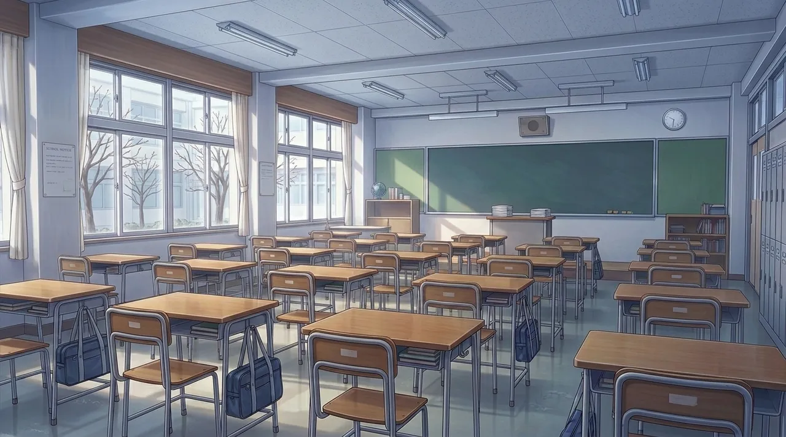

Le stylo violet

Avant même la première image, le jeu fixe le ton de l'arc (arc6_palier, d'après etat_relation()) et calcule une fois pour toutes la route de la suite (arc6_calcule_verdict, ligne 160). Fin mars, les cerisiers de la cour ne sont pas encore ouverts. Jessy arrive à 7 h 50, une heure trop tôt, avec dans la poche le stylo violet d'Ilona qu'il garde depuis le 12 janvier.
Ilona entre en mangeant un pain au lait. Selon le ton hérité, elle s'assoit dans la même rangée que lui (proche), dans la rangée d'à côté (indécis) ou deux rangées plus loin, face à la fenêtre (distant). Des rappels conditionnels montrent ce qu'elle transporte : l'écharpe de Théo, l'écharpe coûteuse jamais portée, la miniature de la maison, ou le nouveau mot de passe du serveur écrit sur sa main.
Jessy décide quoi faire du stylo : le rendre en expliquant, le garder, le rendre sans un mot ou en faire une blague. La réaction d'Ilona varie avec le ton. La façon dont elle range ensuite sa trousse annonce déjà la direction, puis la classe descend au gymnase.
Choix
Que faire du stylo violet ? (pas de question affichée)
- « Le rendre, et dire pourquoi tu l'as gardé. » → arc6_stylo = "rendu_explique"
- « Le garder encore un peu. » → arc6_stylo = "garde"
- « Le rendre, sans rien ajouter. » → arc6_stylo = "rendu"
- « En faire une blague. » → arc6_stylo = "blague"
Conséquences
- Aucun effet sur la route : elle est déjà calculée à la ligne 160.
- arc6_stylo change une réplique de la scène 4 (option « J'ai rien à mettre en face de Tokyo. », lignes 1638-1645) et le geste d'Ilona en scène 5 (lignes 1769-1773 et 1902-1905). Il est relu plus tard dans l'histoire (arc_7_theo.rpy:959-965).